Simulation for non-spatial random effects
XSun
2024-04-22
Last updated: 2024-04-22
Checks: 6 1
Knit directory: mutation_rate/
This reproducible R Markdown analysis was created with workflowr (version 1.7.0). The Checks tab describes the reproducibility checks that were applied when the results were created. The Past versions tab lists the development history.
The R Markdown is untracked by Git. To know which version of the R
Markdown file created these results, you’ll want to first commit it to
the Git repo. If you’re still working on the analysis, you can ignore
this warning. When you’re finished, you can run
wflow_publish to commit the R Markdown file and build the
HTML.
Great job! The global environment was empty. Objects defined in the global environment can affect the analysis in your R Markdown file in unknown ways. For reproduciblity it’s best to always run the code in an empty environment.
The command set.seed(20230228) was run prior to running
the code in the R Markdown file. Setting a seed ensures that any results
that rely on randomness, e.g. subsampling or permutations, are
reproducible.
Great job! Recording the operating system, R version, and package versions is critical for reproducibility.
Nice! There were no cached chunks for this analysis, so you can be confident that you successfully produced the results during this run.
Great job! Using relative paths to the files within your workflowr project makes it easier to run your code on other machines.
Great! You are using Git for version control. Tracking code development and connecting the code version to the results is critical for reproducibility.
The results in this page were generated with repository version dd97c02. See the Past versions tab to see a history of the changes made to the R Markdown and HTML files.
Note that you need to be careful to ensure that all relevant files for
the analysis have been committed to Git prior to generating the results
(you can use wflow_publish or
wflow_git_commit). workflowr only checks the R Markdown
file, but you know if there are other scripts or data files that it
depends on. Below is the status of the Git repository when the results
were generated:
Ignored files:
Ignored: .Rhistory
Untracked files:
Untracked: analysis/denovo0422_simulation_nonspatial.Rmd
Untracked: analysis/denovo0422_simulation_spatial.Rmd
Untracked: analysis/denovo_0422.Rmd
Unstaged changes:
Modified: analysis/denovo_simulation_nonspatial_gamma_new.Rmd
Modified: analysis/index.Rmd
Note that any generated files, e.g. HTML, png, CSS, etc., are not included in this status report because it is ok for generated content to have uncommitted changes.
There are no past versions. Publish this analysis with
wflow_publish() to start tracking its development.
Introduction
Modeling the non-spatial random effects with gamma distribution
We divide the genome into windows. The window sizes for the local fold changes range from hundreds kb to 1mb.
We are modeling the non-spatial random effects \(\theta_i\) with gamma distribution:
\[\theta_i \sim Gamma(\alpha, \beta)\]
Since the observed mutation rate from Roulette \(\mu_i\) is calibrated (the total mutation rate is given), we just have single overdispersion parameter
so, the simple non-spatial random effect model is
\[\theta_i \sim Gamma(\alpha, \alpha)\]
So the likelihood is :
\[\begin{aligned} Pr(y_{i} |\mu_{i},\alpha) &= \int_0^{+\infty} Pr(y_{i}|\mu_{i},\theta_{i})Pr(\theta_{i}|\alpha)\,d\theta_{i} \\ \end{aligned}\]
which can be optimized by MLE with different methods and different initial values.
# Input is a dataframe of observed rates and expected rates
est.alpha <- function(dat) {
mu_pos <- dat$exp > 0
y_pos <- dat$obs > 0
dat.mu_pos <- dat[(!y_pos)&mu_pos,]
dat.y_pos <- dat[y_pos,]
loglik <- function(alpha) {
loglik.mu_pos <- alpha*(log(alpha) - log(dat.mu_pos$exp+alpha))
loglik.y_pos <- log(gamma(dat.y_pos$obs+alpha)) - log(gamma(alpha)) + alpha*log(alpha) - (dat.y_pos$obs+alpha)*log(dat.y_pos$exp+alpha)
-sum(loglik.mu_pos) - sum(loglik.y_pos)
}
res <- optim(par=1, fn=loglik, method="BFGS") # May need to try different initiations and methods
res$par # MLE of alpha
}The posterior distribution of $ _{i} $ is :
\[ \theta_{i} | y_i,\mu_i,\alpha \sim Gamma( y_i+\alpha, \mu_i+\alpha)\] So the posterior mean of $ _{i} $ is:
\[E(\theta_{i} | y_i,\mu_i,\alpha) = \dfrac{y_i+\alpha}{\mu_i+\alpha} \]
Simulation setups
Use Gamma prior to sample \(\theta_i\) in the simulation: \[ \theta_{i} \sim Gamma(\alpha,\alpha)\] for all windows. The prior \(\alpha \in \{5,10,30,50\}\)
Sampling the observed mutation count \(y_i\) From Poisson Distribution \(y_i \sim pois(u_i * \theta_i)\), \(u_i\) is the Roulette estimated mutation rate
Estimating \(\alpha_{est}\) using MLE Simplex (Nelder-Mead) method (see the details above)
Computing the estimated \(\tilde{\theta_i}\) from \[\dfrac{y_i+\alpha_{est}}{\mu_i+\alpha_{est}} \]
Functions used
library(ggplot2)
plot_randeff <- function(data) {
ggplot(data, aes(x = x)) +
geom_line(aes(y = randeff_simulated, color = "Simulated"), alpha = 0.5) +
geom_line(aes(y = randeff_est, color = "Estimated"), alpha = 0.7) +
labs(x = "Window index",
y = "Fold changes",
color = "Type") +
scale_color_manual(values = c("Simulated" = "blue", "Estimated" = "red")) +
theme_minimal()
}
scatter_plot_randeff <- function(data) {
# Fit the linear model
fit <- lm(randeff_est ~ randeff_simulated, data = data)
adj_rsq <- summary(fit)$adj.r.squared # Extract the adjusted R-squared
# Generate the plot
ggplot(data, aes(x = randeff_simulated, y = randeff_est)) +
geom_point(color = "black") +
geom_abline(intercept = 0, slope = 1, color = "red") +
geom_text(aes(label = paste("Adj R-sq =", round(adj_rsq, 3))),
x = Inf, y = -Inf, hjust = 1, vjust = 0,
color = "blue") +
labs(x = "True fold change theta_i",
y = "Estimated fold change") +
theme_minimal()
}
plot_dnm <- function(data, windowsize) {
ggplot(data, aes(x = x)) +
geom_point(aes(y = y_sample), color = "grey") +
geom_line(aes(y = randeff_simulated), color = "blue") +
geom_line(aes(y = randeff_est), color = "red", alpha = 0.5) +
labs(x = "Window index",
y = paste0("% of DNM/window (windowsize = ", as.numeric(windowsize) / 1000, "kb)")) +
theme_minimal()
}Results
The estimated mutation rates are from Roulette chr1
10 kb
Gamma prior \(\alpha=5\)
[1] "true alpha = 5"[1] "estimated alpha = 5.1" 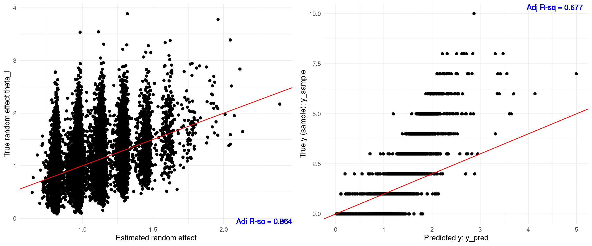
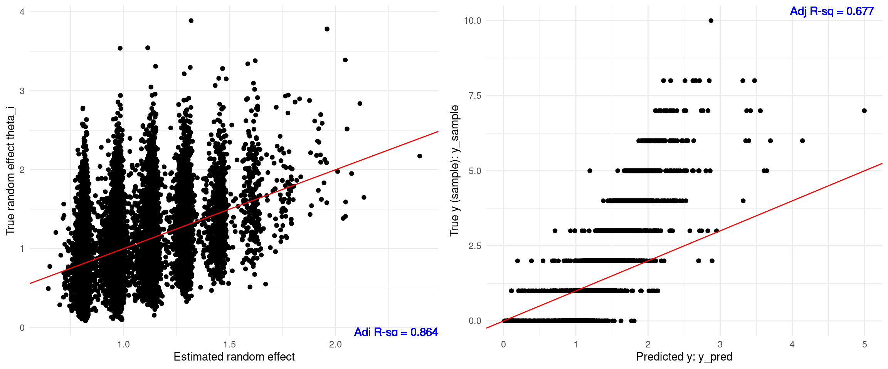
Gamma prior \(\alpha=10\)
[1] "true alpha = 10"[1] "estimated alpha = 9.57500000000001"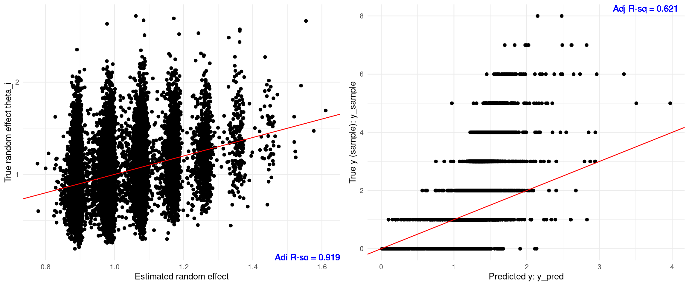
Gamma prior \(\alpha=30\)
[1] "true alpha = 30"[1] "estimated alpha = 27.3"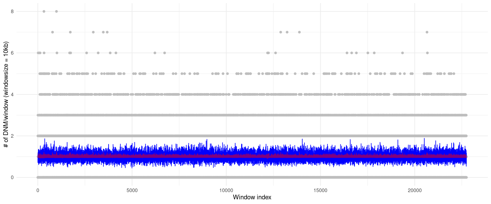
Gamma prior \(\alpha=50\)
[1] "true alpha = 50"[1] "estimated alpha = 51.3"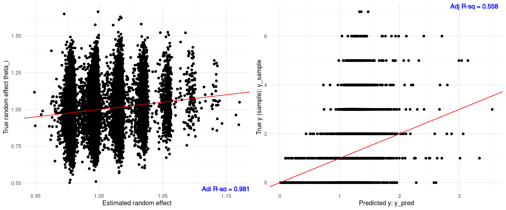
30 kb
Gamma prior \(\alpha=5\)
[1] "true alpha = 5"[1] "estimated alpha = 4.925"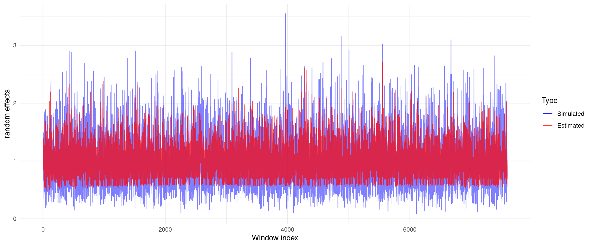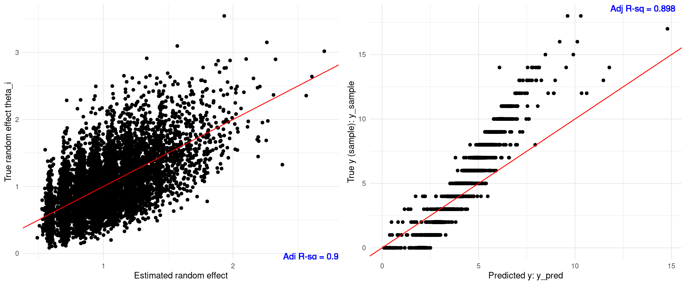
Gamma prior \(\alpha=10\)
[1] "true alpha = 10"[1] "estimated alpha = 9.77500000000001"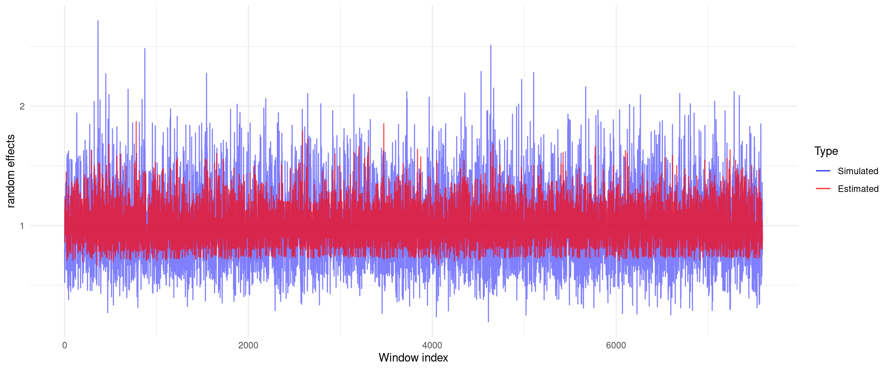
Gamma prior \(\alpha=30\)
[1] "true alpha = 30"[1] "estimated alpha = 26.1"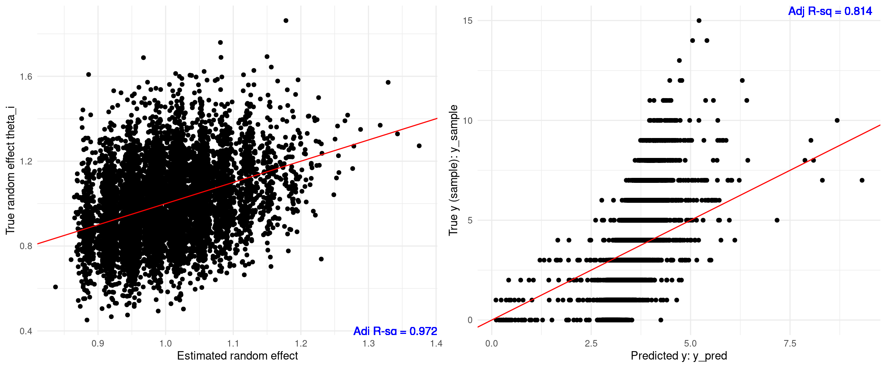
Gamma prior \(\alpha=50\)
[1] "true alpha = 50"[1] "estimated alpha = 40.1"50 kb
Gamma prior \(\alpha=5\)
[1] "true alpha = 5"[1] "estimated alpha = 4.9125"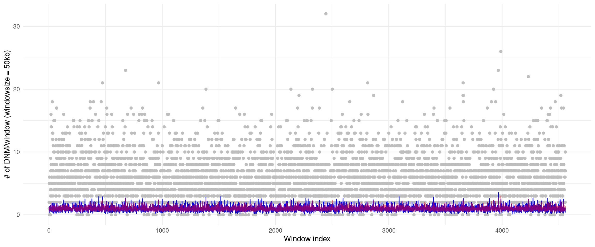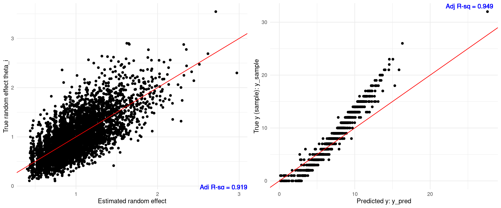
Gamma prior \(\alpha=10\)
[1] "true alpha = 10"[1] "estimated alpha = 10.4"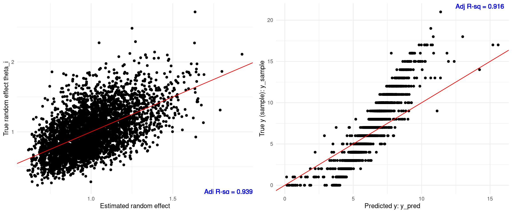
Gamma prior \(\alpha=30\)
[1] "true alpha = 30"[1] "estimated alpha = 24.4"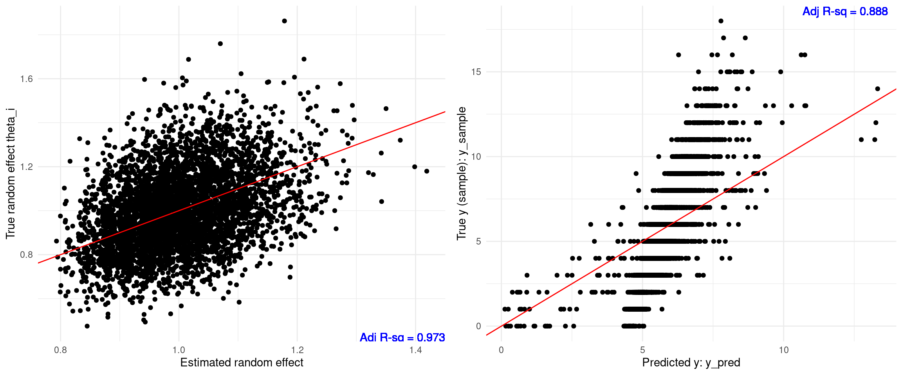
Gamma prior \(\alpha=50\)
[1] "true alpha = 50"[1] "estimated alpha = 31.3"
100 kb
Gamma prior \(\alpha=5\)
[1] "true alpha = 5"[1] "estimated alpha = 4.8625"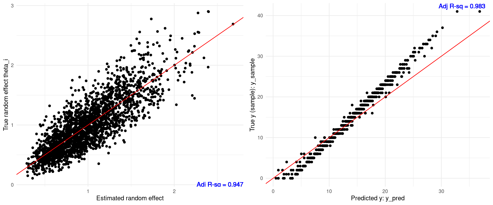
Gamma prior \(\alpha=10\)
[1] "true alpha = 10"[1] "estimated alpha = 9.72500000000001"Gamma prior \(\alpha=30\)
[1] "true alpha = 30"[1] "estimated alpha = 26.8"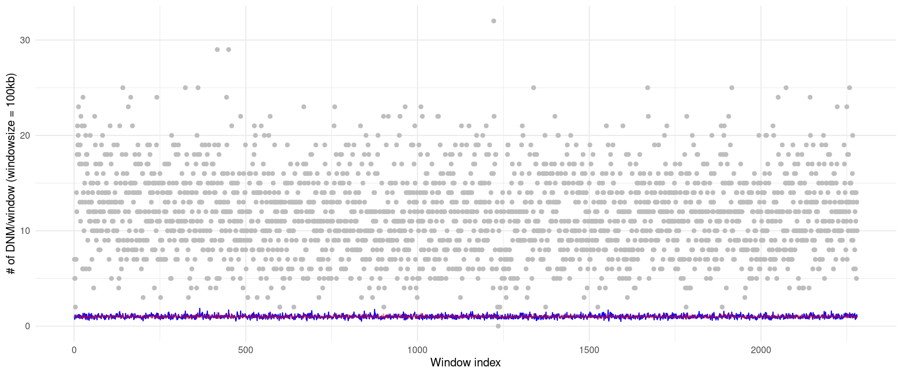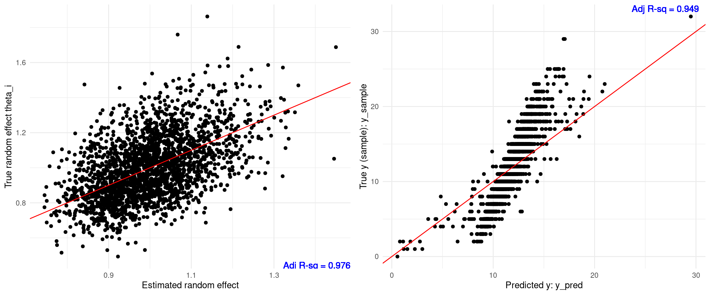
Gamma prior \(\alpha=50\)
[1] "true alpha = 50"[1] "estimated alpha = 42.5"
sessionInfo()R version 4.2.0 (2022-04-22)
Platform: x86_64-pc-linux-gnu (64-bit)
Running under: CentOS Linux 7 (Core)
Matrix products: default
BLAS/LAPACK: /software/openblas-0.3.13-el7-x86_64/lib/libopenblas_haswellp-r0.3.13.so
locale:
[1] LC_CTYPE=en_US.UTF-8 LC_NUMERIC=C
[3] LC_TIME=en_US.UTF-8 LC_COLLATE=en_US.UTF-8
[5] LC_MONETARY=en_US.UTF-8 LC_MESSAGES=en_US.UTF-8
[7] LC_PAPER=en_US.UTF-8 LC_NAME=C
[9] LC_ADDRESS=C LC_TELEPHONE=C
[11] LC_MEASUREMENT=en_US.UTF-8 LC_IDENTIFICATION=C
attached base packages:
[1] stats graphics grDevices utils datasets methods base
other attached packages:
[1] ggplot2_3.3.5
loaded via a namespace (and not attached):
[1] Rcpp_1.0.8.3 highr_0.9 pillar_1.9.0 compiler_4.2.0
[5] bslib_0.3.1 later_1.3.0 jquerylib_0.1.4 git2r_0.30.1
[9] workflowr_1.7.0 tools_4.2.0 digest_0.6.29 jsonlite_1.8.0
[13] evaluate_0.15 lifecycle_1.0.4 tibble_3.2.1 gtable_0.3.0
[17] pkgconfig_2.0.3 rlang_1.1.2 cli_3.6.1 rstudioapi_0.13
[21] yaml_2.3.5 xfun_0.41 fastmap_1.1.0 withr_2.5.0
[25] dplyr_1.1.4 stringr_1.5.1 knitr_1.39 generics_0.1.2
[29] fs_1.5.2 vctrs_0.6.5 sass_0.4.1 tidyselect_1.2.0
[33] rprojroot_2.0.3 grid_4.2.0 glue_1.6.2 R6_2.5.1
[37] fansi_1.0.3 rmarkdown_2.25 farver_2.1.0 magrittr_2.0.3
[41] scales_1.2.0 promises_1.2.0.1 htmltools_0.5.2 colorspace_2.0-3
[45] httpuv_1.6.5 labeling_0.4.2 utf8_1.2.2 stringi_1.7.6
[49] munsell_0.5.0